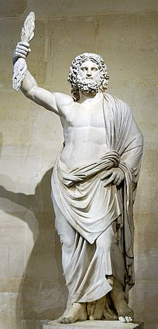
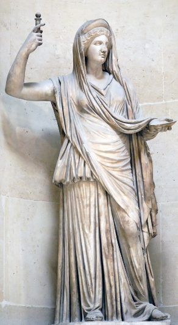
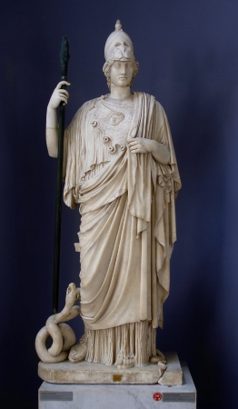
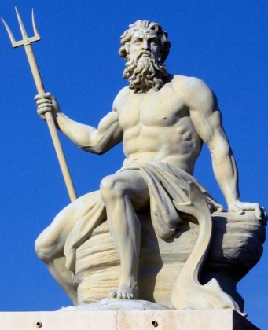
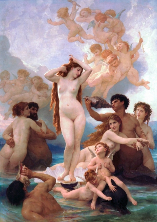
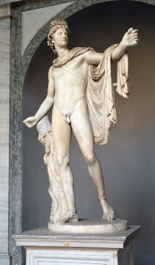
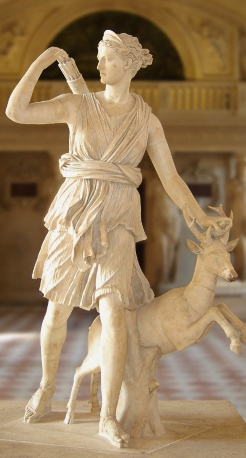
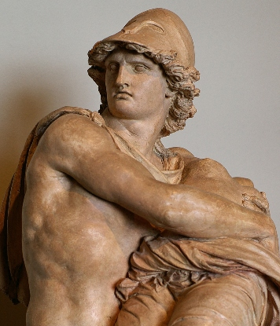

Dioses
En el corazón de la mitología griega se encuentran los dioses y diosas del Olimpo, una asamblea divina liderada por Zeus, el soberano del cielo y el trueno. Los dioses olímpicos personifican una variedad de aspectos de la experiencia humana y las fuerzas de la naturaleza: Atenea representa la sabiduría y la estrategia militar, Apolo es el dios de la música y la poesía, Hermes es el mensajero divino, y Afrodita personifica el amor y la belleza. A lo largo de los siglos, estas divinidades han sido veneradas, temidas, invocadas y reinterpretadas por generaciones de griegos y, posteriormente, por culturas posteriores que se han inspirado en su legado.
Zeus
Como el rey de los dioses y gobernante del Olimpo, Zeus es una figura omnipotente y a menudo impredecible en la mitología griega. Nacido de Cronos y Rea, fue el tercero de los hijos de la pareja, pero el primero en sobrevivir a la voracidad de su padre. Criado en secreto por ninfas y cuidado por la diosa Gea, Zeus creció con la determinación de desafiar a su padre y a los Titanes en la Guerra Titanomaquia. Después de una década de lucha, Zeus emergió victorioso y se convirtió en el gobernante del cielo y la tierra. Su reinado está marcado por su control sobre los truenos y el rayo, así como por su naturaleza apasionada y sus numerosos amoríos con diosas y mortales.

Hera
Como la esposa y hermana de Zeus, Hera es la reina del Olimpo y la protectora del matrimonio y la familia. Nacida de Cronos y Rea, Hera pasó a ser una de las principales deidades del panteón griego. Su relación con Zeus está marcada por la infidelidad y los conflictos, ya que él engendra hijos con otras diosas y mortales. A pesar de su ira y celos, Hera es reverenciada como la diosa del matrimonio sagrado y la fidelidad conyugal, y es conocida por su poder y su astucia.

Atenea
Como la esposa y hermana de Zeus, Hera es la reina del Olimpo y la protectora del matrimonio y la familia. Nacida de Cronos y Rea, Hera pasó a ser una de las principales deidades del panteón griego. Su relación con Zeus está marcada por la infidelidad y los conflictos, ya que él engendra hijos con otras diosas y mortales. A pesar de su ira y celos, Hera es reverenciada como la diosa del matrimonio sagrado y la fidelidad conyugal, y es conocida por su poder y su astucia.

Poseidón
Como la esposa y hermana de Zeus, Hera es la reina del Olimpo y la protectora del matrimonio y la familia. Nacida de Cronos y Rea, Hera pasó a ser una de las principales deidades del panteón griego. Su relación con Zeus está marcada por la infidelidad y los conflictos, ya que él engendra hijos con otras diosas y mortales. A pesar de su ira y celos, Hera es reverenciada como la diosa del matrimonio sagrado y la fidelidad conyugal, y es conocida por su poder y su astucia.

Afrodita
Como la esposa y hermana de Zeus, Hera es la reina del Olimpo y la protectora del matrimonio y la familia. Nacida de Cronos y Rea, Hera pasó a ser una de las principales deidades del panteón griego. Su relación con Zeus está marcada por la infidelidad y los conflictos, ya que él engendra hijos con otras diosas y mortales. A pesar de su ira y celos, Hera es reverenciada como la diosa del matrimonio sagrado y la fidelidad conyugal, y es conocida por su poder y su astucia.

Apolo
Apolo, el hijo de Zeus y Leto, es el dios del sol, la música, la poesía, la medicina y la profecía. Nacido en la isla de Delos, Apolo es reverenciado como uno de los dioses más versátiles y talentosos del Olimpo. Es conocido por su belleza, su habilidad en el arco y la lira, y su papel como líder de las Musas. Además, Apolo preside el famoso Oráculo de Delfos, donde los mortales acuden en busca de consejo y predicciones del futuro.

Artemisa
La hermana gemela de Apolo, Artemisa es la diosa de la caza, la virginidad y la naturaleza salvaje. Nacida en la isla de Delos, Artemisa es reverenciada como una cazadora experta y una protectora de la vida silvestre. Es conocida por su independencia y su dedicación a preservar su virginidad, así como por su feroz protección de la naturaleza y los animales.

Ares
Dios de la guerra y la violencia, Ares es el hijo de Zeus y Hera y el hermano de Atenea. A menudo se lo representa como un guerrero feroz y despiadado, cuyo amor por la batalla y el derramamiento de sangre lo convierten en una figura temida en el Olimpo. Ares es reverenciado como el padre de la guerra y el líder de las hordas de guerreros, pero también es despreciado por su imprudencia y su falta de estrategia.

Reflexión
El panteón de dioses griegos es tan diverso como fascinante, lleno de figuras poderosas, intrigas divinas y aventuras épicas que han cautivado la imaginación de generaciones. Desde el majestuoso Zeus, rey de los dioses, hasta la valiente Atenea, diosa de la sabiduría y la estrategia, cada deidad tiene su propio papel y personalidad distintiva en el cosmos griego.
Hera, la celosa esposa de Zeus, y Poseidón, el irascible señor de los mares, añaden capas de complejidad y drama a la mitología. Mientras tanto, la seductora Afrodita y el guerrero Ares personifican aspectos fundamentales de la experiencia humana: el amor y la guerra.
Los gemelos divinos, Apolo y Artemisa, traen consigo la luz del sol y la serenidad de la naturaleza, mientras que héroes legendarios como Perseo, Teseo y Jasón, desafían a monstruos y enfrentan pruebas imposibles en su búsqueda de gloria y honor.
En última instancia, la mitología griega no solo nos ofrece entretenimiento, sino también una ventana hacia la esencia misma de la condición humana: sus pasiones, sus luchas y sus triunfos. En estas historias antiguas, encontramos reflejos de nuestras propias vidas y un recordatorio de la eterna lucha entre el orden y el caos, el amor y el odio, la sabiduría y la locura.
Así, el legado de los dioses griegos perdura como un testimonio perdurable de la imaginación y la creatividad del ser humano, un tesoro de sabiduría y mito que sigue inspirando y fascinando al mundo moderno. Que estas historias sigan cautivando corazones y mentes durante siglos venideros, recordándonos siempre nuestra conexión con el pasado y la eterna búsqueda de la verdad y el significado en el universo.